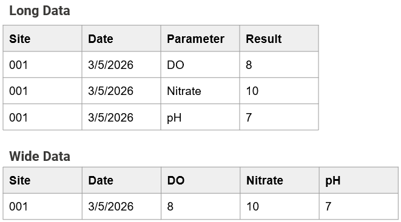
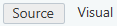
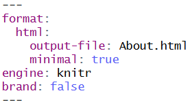

Overview
WQdashboard is an open-source dashboard template that can be used to display water quality data using interactive maps, report cards, and graphs. It is designed for water quality organizations who want to share their data with the public.
WQdashboard is written in R Shiny. No coding knowledge is required to set up or run WQdashboard, although advanced users can take advantage of the modular code to fully customize WQdashboard to meet their needs.
If you are new to R, please read vignette("intro_to_r")
for instructions on which programs to download and how to use them.
Supported Data Formats
Although WQdashboard has a native data format, it accepts multiple
input formats for site, result, and threshold data. Templates for
WQdashboard’s format can be found in the inst/extdata
folder.
Supported formats are listed below.
| Format | Code | Sites | Thresholds | Results |
|---|---|---|---|---|
| Blackstone River Coalition | MA_BRC | x | x | x |
| Friends of Casco Bay | ME_FOCB | x | x | x |
| Maine DEP | ME_DEP | x | x | |
| MassWateR | MassWateR | x | x | x |
| RIDEM | RI_DEM | x | x | |
| URI Watershed Watch | RI_WW | x | x | x |
| WQdashboard | WQdashboard | x | x | x |
| WQX | WQX | x | x | x |
Custom Data Formats
Unsupported data formats can still be used as long as the tables are long and not wide, eg each observation is placed on its own row.

To use a custom format, fill out the csv files in
data-raw/custom_format.
| File | Description | Used For |
|---|---|---|
| colnames_extra.csv | Column names for categorical result data | Categorical Results |
| colnames_results.csv | Column names for result data | Results |
| colnames_sites.csv | Column names for site metadata | Sites |
| varnames_activity.csv | Variable names for activity types | Results, Categorical Results |
| varnames_parameters.csv | Variable names for parameters | Thresholds, Results, Categorical Results |
| varnames_qualifiers.csv | Variable names for qualifiers | Results, Categorical Results |
| varnames_units.csv | Variable names for units | Thresholds, Results, Categorical Results |
Initial Set Up
The data-raw folder contains a series of numbered
scripts. These scripts must be run in order, although steps 0-4 do not
need to be rerun after initial setup. Steps 2, 4, and 6 are optional.
Each script contains a detailed description of what it does. Some of the
scripts also include variables after the description.
Before running a script, edit any variables by changing the text to the
right of <-. All text should be in quotes except for the
special values NA, TRUE, and
FALSE.
Example
sites_csv <- "sites.csv"
in_format <- "WQdashboard"
default_state <- NATo run a script, use CTRL + SHIFT +
ALT on a Windows computer or CMD +
SHIFT + ALT on a Mac.
00_install.R
This script installs all of the packages needed to run WQdashboard. It also installs tinytex, which is used to generate PDFs.
01_customize_website.R
This script is used to customize the site theme, “About” page, and “Download” page.
Before running this script, open the inst/app/www folder
and update the following files: About.qmd,
Download.qmd, and _brand.yml
About.qmd sets the content for the “About” page. It
contains some default text which can be replaced.
Download.qmd sets some of the content for the “Download”
page; on the dashboard itself, a “Download” button will be placed below
the contents of Download.qmd. Download.qmd
contains default text with a suggested citation and some light code to
dynamically update the organization name and latest year updated; feel
free to replace these elements with static text or remove them
entirely.
About.qmd and Download.qmd are both Quarto documents. If you are unfamiliar
with Quarto, you can select “Visual” mode in the upper left corner of
the document window and edit the documents the same way as a Word
document. You may add images to About.qmd and
Download.qmd as long as they are stored in the
inst/app/www folder. Tables are also fully supported.

IMPORTANT Do not change the header for either Quarto document.

IMPORTANT Changes to About.qmd and
Download.qmd will only be reflected in the website if you
run 01_customize_website.R.
_brand.yml lets you customize the appearance of the
site. Set line 2 (name:) to the name of your organization
and line 3 (title:) to your desired website title. The
remaining lines set the color palette and fonts for the website. If you
would like to learn more about custom themes, visit the _brand.yml
website.
IMPORTANT You must update line 2
(name:) to your organization name to ensure your
organization is properly credited on the “Download” and “Report Card”
tabs.
02_add_shapefiles.R
Optional. If you would like to add custom watershed or river
layers to the interactive map, use this script to upload shapefiles.
Shapefiles must be stored in the data-raw folder.
Shapefiles must use the WGS 1984 projection. Higher resolution shapefiles take longer to load and may slow down the website.
Variables
watershed_shp: Name of the watershed shapefile. Must be a polygon layer. Set to
NAif you do not want to upload a shapefile.watershed_name_col: Watershed column name. This column will be used to label each watershed polygon.
river_shp: Name of river shapefile. Must be a polyline layer. Set to
NAif you do not want to upload a shapefile.river_name_col: River column name. This column will be used to label each river polyline.
03_add_sites.R
This script uploads site metadata. Site metadata must be saved as a
csv file in the data-raw folder. See Supported Data Formats for a list of
supported formats. To use a custom format, set the
in_format variable to “custom” and fill out this file:
data-raw/custom_format/colnames_sites.csv
If you would like to use the official WQdashboard format, a template
can be found at inst/extdata/template_sites.csv
Variables
sites_csv: Name of csv file containing site metadata.
in_format: Input format. Not case sensitive. Options: WQdashboard, WQX, MassWateR, RI_WW, MA_BRC, ME_FOCB, custom
default_state: State name or abbreviation. Any blank values in the “State” column will be updated to this value. Set to
NAto leave blanks as-is.
04_add_thresholds.R
Optional. Thresholds are used to determine whether parameter values should be classified as excellent, good, fair, or poor. By default, WQdashboard includes several thresholds based on state or federal regulations. Some thresholds, however, are highly site specific - for example, Rhode Island water quality regulations dictate that turbidity should not exceed 5 NTU over background values for class AA water. To account for such regulations, WQdashboard lets users add site, group, and/or state specific thresholds.
To include custom thresholds, fill out the custom threshold template
at data-raw/thresholds.csv. A copy of this file can be
found at inst/extdata/template_thresholds.csv if
needed.
When adding custom thresholds, each threshold should be placed on its own row. Here is what the columns mean:
State,Group,Site_ID: These columns determine which site(s) the threshold applies to. Each row may include a Group or Site_ID but not both. If all three columns are blank, the threshold will be applied to all sites.Depth_Category: OPTIONAL. If you want the threshold to apply to a specific depth category, specify that here. f this column is left blank, then the threshold will be applied to all depth levels. Values: Surface, Midwater, Near Bottom, BottomParameter,Unit: Parameter, unit.Calculation: Method used to calculate an annual numeric score. Acceptable values: minimum, maximum, average, median, geometric mean, 90th percentileThreshold_Min,Threshold_Max: The minimum and maximum acceptable values. Must enter a value for at least one column.Excellent,Good,Fair: The threshold cut off values for excellent, good, and fair results. Either leave all three columns blank or fill all three of them out.
If multiple thresholds are provided for the same location, depth, and parameter, then all of the thresholds will be applied and the lowest score will be used.
Example
In the table below, Enterococcus must have an annual geometric mean below 35 cfu/100mL and a 90th percentile below 130 cfu/100mL or else it will be assigned a score of “Does Not Meet Criteria.” Total Coliform, however, only needs to have a 90th percentile below 100 cfu/100mL.
| State | Group | Depth_Category | Parameter | Unit | Calculation | Threshold_Min | Threshold_Max | Excellent | Good | Fair |
|---|---|---|---|---|---|---|---|---|---|---|
| MA | Enterococcus | cfu/100mL | geometric mean | 35 | ||||||
| MA | Enterococcus | cfu/100mL | 90th percentile | 130 | ||||||
| MA | Total Coliform | cfu/100mL | 90th percentile | 100 |
Variables
skip_step: Set to
TRUEto skip this step and go to the next file. Set toFALSEif you would like to add custom thresholds.threshold_csv: Name of csv file containing threshold metadata.
-
in_format: Format used for parameters and units. Not case sensitive Accepted values: WQdashboard, WQX, MassWateR, RI_DEM, RI_WW, MA_BRC, ME_DEP, ME_FOCB, Custom. If using a custom format, update the following files:
data-raw/custom_format/varnames_parameters.csvdata-raw/custom_format/varnames_units.csv
05_add_results.R
This script adds or updates result data. Only numeric results are
accepted; categorical results should be uploaded using
06_add_categorical_results.csv. Result data must be saved
as a csv file in the data-raw folder. Multiple data formats
are supported (see Supported Data
Formats). A template for the official WQdashboard format can be
found at inst/extdata/template_results.csv
If using an unsupported/custom format, set in_format to
“custom” and update the following files:
data-raw/custom_format/colnames_results.csvdata-raw/custom_format/varnames_activity.csvdata-raw/custom_format/varnames_parameters.csvdata-raw/custom_format/varnames_qualifiers.csvdata-raw/custom_format/varnames_units.csv
Variables
results_csv: Name of CSV file containing result data.
in_format: Input format. Not case sensitive. Accepted values: WQdashboard, WQX, MassWateR, RI_DEM, RI_WW, MA_BRC, ME_DEP, ME_FOCB, custom
-
date_format: Format used for “Date” column. Example: “m/d/y”. List of abbreviations:
- B - Full month name (August)
- b - Abbreviated month name (Aug)
- m - Month, numeric (8)
- d - Day of the month
- y - Year without century (26)
- Y - Year with century (2026)
- H - Hour
- m - Minute
- S - Second
- p - AM/PM
- z - Timezone
timezone: Timezone.
overwrite_existing: If
TRUE, replaces old result data with new data. IfFALSE, combines old and new result data.recalculate_score: If
TRUE, recalculates all parameter scores, including old data. IfFALSE, does not recalculate old scores.update_citation: If
TRUE, will update the “year_updated” variable forDownload.qmd
06_add_categorical_results.R
Optional. This script adds or updates categorical and/or
download only result data. This data will ONLY be available for
download, and will not display on the maps, report card, or graph tabs.
Categorical result data must be saved as a csv file in the
data-raw folder. Multiple data formats are supported (see
Supported Data Formats). A
template for the official WQdashboard format can be found at
inst/extdata/template_results.csv
If using an unsupported/custom format, set in_format to
“custom” and update the following files:
data-raw/custom_format/colnames_results.csvdata-raw/custom_format/varnames_activity.csvdata-raw/custom_format/varnames_parameters.csvdata-raw/custom_format/varnames_qualifiers.csvdata-raw/custom_format/varnames_units.csv
Variables
results_csv: Name of CSV file containing result data.
in_format: Input format. Not case sensitive. Accepted values: WQdashboard, WQX, MassWateR, RI_DEM, RI_WW, MA_BRC, ME_DEP, ME_FOCB, custom
-
date_format: Format used for “Date” column. Example: “m/d/y”. List of abbreviations:
- B - Full month name (August)
- b - Abbreviated month name (Aug)
- m - Month, numeric (8)
- d - Day of the month
- y - Year without century (26)
- Y - Year with century (2026)
- H - Hour
- m - Minute
- S - Second
- p - AM/PM
- z - Timezone
timezone: Timezone.
overwrite_existing: If
TRUE, replaces old categorical result data with new data. IfFALSE, combines old and new categorical result data.update_citation: If
TRUE, will update the “year_updated” variable forDownload.qmd
07_preview.R
This script launches WQdashboard on your local computer and lets you
preview how it looks. This step should always be run before
08_launch.R in order to check for bugs.
08_launch.R
Run this script to create or update WQdashboard as a website. In order to host WQdashboard on shinyapps.io or posit connect, you MUST create an account first.
NOTE: If you have added custom thresholds, shapefiles, or categorical
data, you may receive a warning message about undocumented variables.
This message can be safely ignored, but if you want to stop seeing it,
go to R/data.R and uncomment the section describing the
relevant file(s) by removing the first # at the start of
each line. (You can also select the relevant section and use
CTRL + SHIFT + C)
For more information, see vignette("publishing").
Updating Data
WQdashboard data can be updated at any time by running the
appropriate scripts. After adding or modifying data, run
07_preview.R to check for bugs and 08_launch.R
to update the website.
Updating Dashboard Appearance
To update the “About” or “Download” page, run
01_customize_website.R. Changes to _brand.yml
are automatically applied, even if 01_customize_website.R
is not run.
Updating Site Metadata
To update site metadata, run 03_add_sites.R. This will
overwrite any existing site metadata.